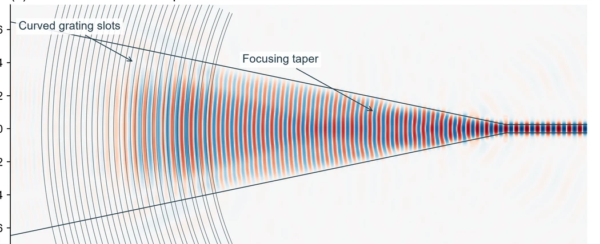
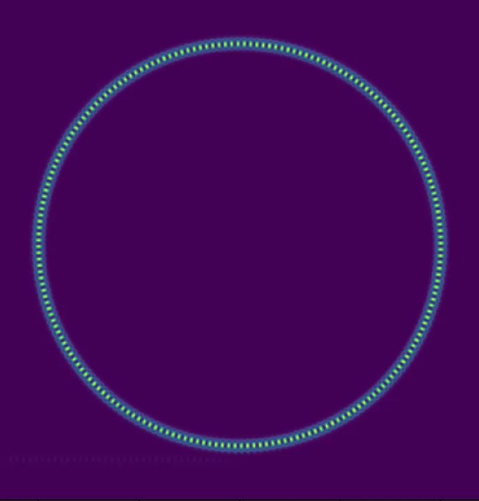
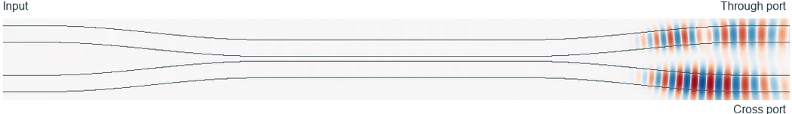
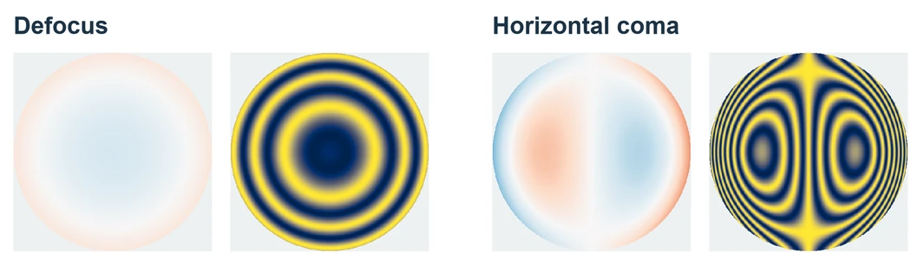

Silicon & silicon nitride
Research portfolio
Nanophotonic devices & computational optics
I study how light couples into waveguides, circulates in resonators, and forms interference patterns.
Sun Yat-sen University
Browse projects
Silicon focusing grating3D FDTD · 1550 nm
Selected projects

Resonators
Silicon microring resonator
A time-domain view of a pulse coupling into a ring.
Waveguide coupling
SiN directional coupler
How coupling length changes which port carries the light.
Cavity modes
InP photonic crystal cavity
A simulated mode confined near an L8 line defect.
Computational optics